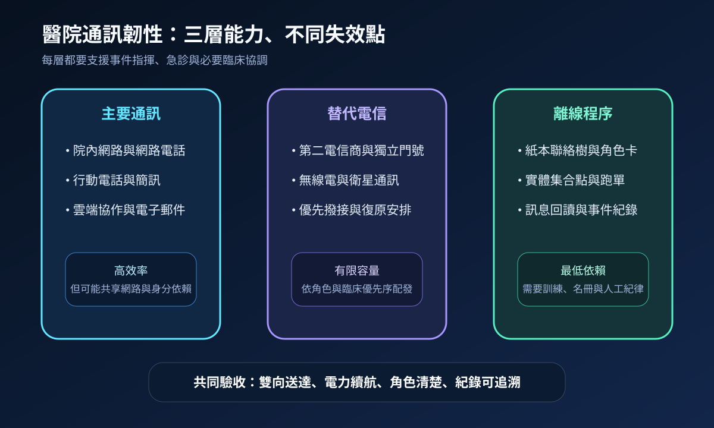
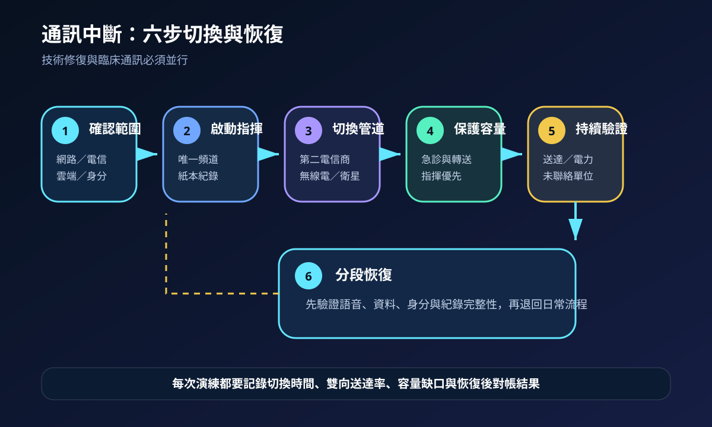
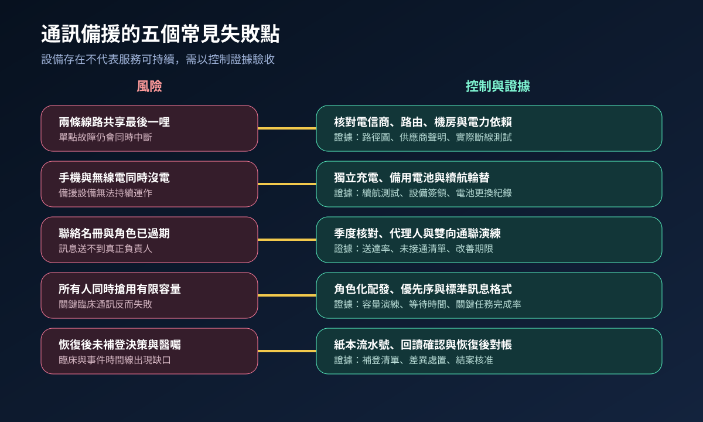

醫療資安國際觀察 · 2026-11-20
醫院失去網路與電話時如何維持指揮：從帶外通訊到優先復原
作者：Dr. William｜醫療資訊與資安治理實務工作者
醫院的網路、行動電話、網路電話與協作平台可能同時依賴同一電信路徑；重大事故發生時，通訊韌性必須先保住事件指揮、急診協調與必要臨床聯絡。
名詞解釋：帶外通訊與優先電信服務
帶外通訊是與主要網路、身分系統或協作平台分離的替代管道，例如獨立行動門號、無線電、衛星通訊、紙本聯絡樹或預先約定的實體集合點。優先電信服務則是在網路壅塞或修復資源有限時，讓符合資格的緊急任務取得較高的撥接或復原優先序；它不等於保證連線，也不能取代多路徑設計。
國際現況與適用邊界
美國 HHS OCR 於 2026 年 10 月的資安通訊指出，醫療機構應為網路連線受限或完全中斷準備必要任務、備援電力、無線電與衛星通訊等替代能力。CISA 的 Priority Telecommunications Services 將 GETS、WPS 與 TSP 分別用於優先通話、行動服務優先及關鍵電信線路的優先復原，適用對象包括美國公共衛生與緊急服務組織。
台灣適用原則：美國 GETS、WPS 與 TSP 的資格、服務與行政程序不直接適用台灣醫療機構；可借用其治理概念，與本地電信業者、院內總務、急診、資訊及資安單位建立多路徑、優先復原、離線聯絡與定期測試機制。
規劃：先定義通訊最低可行能力
範圍應涵蓋事件指揮、急診與救護協調、院內廣播、病房調度、設施與醫療氣體、供應商緊急支援、主管機關聯絡及病人家屬訊息。每項任務需記錄主要管道、替代管道、共同電力與電信依賴、負責角色、可接受中斷時間及人工程序。驗收指標可採「在主要網路與單一電信商不可用時，指定角色於約定時間內完成雙向確認」。
實作：從偵測到恢復的六個步驟
- 確認範圍：區分院內網路、電信線路、基地台、DNS、雲端協作或身分服務故障。
- 啟動指揮：使用預先印製的聯絡樹與啟動條件，指定唯一事件頻道及紀錄人員。
- 切換管道：依序啟用第二電信商、獨立行動設備、無線電或衛星通訊。
- 保護容量：將有限通訊資源保留給急診、病人轉送、設施安全與事件指揮。
- 持續驗證：定時確認訊息送達、電力續航、設備可用與未聯絡成功的單位。
- 分段恢復：主服務恢復後先驗證語音、資料、身分與記錄完整性，再逐步退回日常流程。

風險：備援設備可能共享同一失效點
常見失敗包括兩條線路實際共用同一機房或最後一哩、無線電與手機都依賴同一充電設備、聯絡名冊過期、替代門號未定期登入、衛星設備只在採購時測試、所有人同時使用造成容量耗盡，以及恢復後沒有補登醫囑與事件紀錄。控制重點是依賴路徑核對、電力分離、角色化配發、定期通聯演練、訊息回讀及恢復後對帳。

可執行清單
- 是否已列出事件指揮、急診、設施與轉院協調的最低通訊需求？
- 主要與替代線路是否確認不同電信商、路由、機房、電力與身分依賴？
- 聯絡樹、無線電呼號、替代門號與設備保管人是否每季核對？
- 替代設備是否具備獨立充電、備用電池與離線操作卡？
- 是否演練主要網路及行動電話同時失效，而非只測單一設備？
- 是否定義有限容量的使用優先序、訊息格式與回讀要求？
- 恢復後是否補登醫囑、轉送、決策與事件時間線並完成對帳？
來源
- HHS OCR｜October 2026 OCR Cybersecurity Newsletter（發布：2026-10-26；查閱：2026-11-20）
- CISA｜Priority Telecommunications Services（持續維護頁面；查閱：2026-11-20）
- NIST｜SP 800-34 Rev. 1, Contingency Planning Guide for Federal Information Systems（發布：2010-05；查閱：2026-11-20）
內容說明
本文依健康台灣深耕計畫相關治理內容整理，並參考 HHS、CISA 與 NIST 官方資料，說明醫院電信中斷時的最低通訊能力、替代路徑、優先復原與演練驗收；不把美國電信優先服務或聯邦規範視為台灣法定義務，也不取代台灣主管機關、電信業者、醫院緊急應變或法律程序。